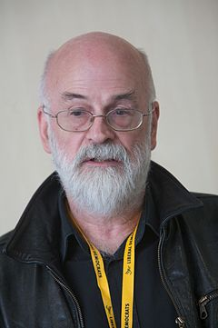

Sir Terence David John Pratchett OBE (ur. 28 kwietnia 1948 w Beaconsfield) — angielski pisarz fantasy i science fiction, najbardziej znany jako autor cyklu Świat Dysku. Inne jego dzieła to m.in. Trylogia Johnny'ego Maxwella i Trylogia Nomów. Współpracował także przy adaptacjach swojej twórczości na potrzeby sztuk teatralnych i gier komputerowych.
Pratchett zaczął pisać w wieku 13 lat, a swoją pierwszą pracę opublikował jako 15-latek. Jego pierwsza powieść Dywan została opublikowana w 1971. Pierwsza książka z serii Świat Dysku — Kolor magii — ukazała się w 1983 i od tego momentu autor kończy średnio dwie książki rocznie.
Pratchett był w latach 90. najlepiej sprzedającym się autorem w Wielkiej Brytanii. Do lutego 2007 roku sprzedał na całym świecie ok. 50 milionów książek, a jego dzieła zostały przetłumaczone na 33 języki. Obecnie jest drugim najchętniej czytanym pisarzem w Wielkiej Brytanii, a w USA siódmym najchętniej czytanym pisarzem niepochodzącym ze Stanów Zjednoczonych.
Terry Pratchett został Kawalerem Orderu Imperium Brytyjskiego w 1998 „za zasługi dla literatury”. Jego powieść Zadziwiający Maurycy i jego edukowane gryzonie zdobyła w 2001 nagrodę Carnegie Medal za najlepszą książkę dla dzieci. Książki Pratchetta są często określane jako „kultowe”. W 2008 otrzymał tytuł szlachecki Sir.
Imiona i nazwisko: Terence David John Pratchet
Data urodzenia: 29.04.1984 r.
Narodowość: angielska